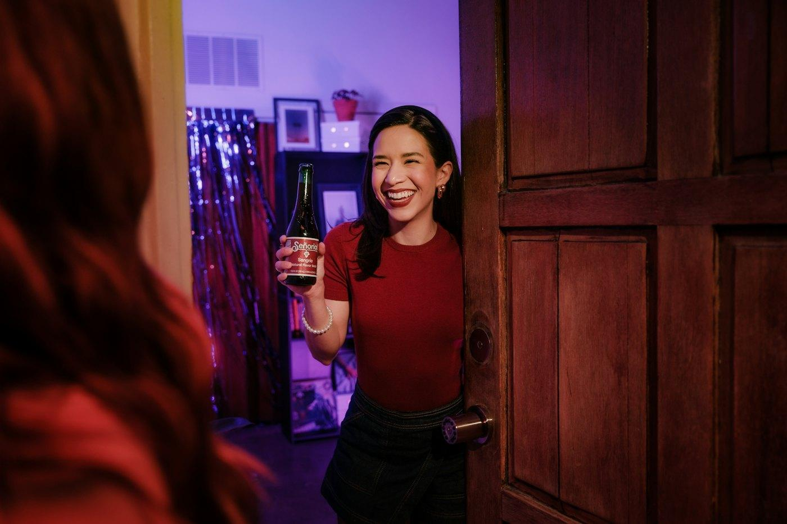

Warm-up · The party question
In the USA, “Are you married?” is a strange first question. In Mexico?
First question at a party: OK, careful or not OK?
Tap a light for each question. One vote per person. 🟢 OK · 🟡 Careful · 🔴 Not OK
Teacher notes · §1 Warm-up
Pedagógica
- Reciclaje S04 (60 s): dos alumnos dictan de memoria un número de su tarea (“His number is…”).
- Escucha la pregunta del coach y abre el semáforo. Acepta respuestas cortas (“OK!”, “Not OK”) y un poco de español: aquí solo se activa. Tú repites cada pregunta en inglés con entonación ascendente ↗.
- No expliques la gramática: la pregunta “Are you…?” se descubre en §3.
Engagement
- Tema Requiere confianza: aclara desde el minuto 1 que en esta clase nadie revela su estado civil real; se habla de personajes y de “la gente”.
- Cierra el voto en voz alta: “The class says: ‘Are you married?’ is ___.”
Crecimiento
- “In 45 minutes you'll ask 5 questions at a party — with perfect short answers.”
- Anota si ya dicen “Yes, I am.” o solo “Yes.”: es su “antes”.
Vocabulary · How are you tonight?
Tap to flip · 🔊 to listen
0 / 10 flippedMatch the English and the Spanish
Tap a word, then its meaning. Say it out loud.
The Impostor Word — one of these five is fake
1. One of these five is “Spanish in English”. 2. Find it and say the real English. 3. Say it in a full sentence.
Teacher notes · §2 Vocabulary
Pedagógica
- Tarjetas (3 min): tú dices, ellos repiten 2 veces. Marca que Yes, I am. y No, I'm not. son bloques completos: nunca “Yes, I'm.”
- Impostor (3-3-3, 4 rondas, ~4 min): “One is fake. Find it. Say the real English in a sentence.” Los equipos votan con el cursor o en el chat; tú haces clic en la tarjeta elegida. Punto por encontrarla + bonus si el equipo dice la forma correcta en oración completa (botones del marcador).
- Calcos meta: “I have 30 years” → I'm 30 · “Is busy” (sin sujeto) → He's busy · “married with” → married to · “Yes, I'm.” → Yes, I am.
Engagement
- Cierre en voz alta en cada ronda: “The impostor was ___. Team __ caught it. The real English is ___.”
- 1:1: el alumno juega contra el récord de 4/4 y tú “te equivocas” en voz alta una vez para que te corrija.
Crecimiento
- “I have 30 years” es el error n.º 1 del hispanohablante en A1: vuelve en el Quiz final (S32).
- Las fotos de estas tarjetas reaparecen en §3 (Answer First): memoria visual.
Grammar · Are you…? No, I'm not.
At the party. Find the questions and the “no” words.
Hi! Are you new here?
Yes, I am. I'm Marco.
Nice to meet you, Marco. Are you from Celaya?
No, I'm not. I'm from Monterrey.
Is your wife here?
Ha! I'm not married. I'm single.
The flip machine
Choose a person and a word · then + / − / ?| be: I'm · you're · he's · she's · they're | |
|---|---|
| + | I'm single. She's busy. |
| − | I'm not married. He isn't tired. They aren't here. |
| ? | Are you married? — No, I'm not. Is he new? — Yes, he is. |
I · you
he · she
they · we
¿Qué es? El verbo be (ser / estar) en negativo y en pregunta. Ya conoces el afirmativo: I'm, you're, he's, she's, they're.
Negativo: se agrega not después de be: I'm not, he isn't (is not), they aren't (are not). Nunca “I no am”.
Pregunta: el verbo va primero: You are married → Are you married? · He is new → Is he new? La voz sube al final ↗.
Respuesta corta: Yes, I am. / No, I'm not. · Yes, he is. / No, he isn't. No se dice solo “Yes” ni “Yes, I'm” — en afirmativo corto no se contrae.
Edad: en inglés la edad va con be: I'm 30 (no “I have 30 years”).
Choose the right form
Answer First — you see the answer, you make the question
1. Here is the answer. 2. What is the question? 3. Say it with good intonation ↗.
Mistakes Spanish speakers make
Teacher notes · §3 Grammar
Pedagógica
- Explicación ≤5 min: diálogo → máquina de volteo (el verbo “salta” al inicio en ?) → tabla → respuestas cortas. Práctica A mecánica (≤1/3 del bloque).
- Answer First (3-3-3): “Here is the answer. What is the question? Say it with good intonation.” El equipo en turno dice la pregunta; tú validas (+1) y das +1 extra si la entonación sube ↗. Luego “Show the question” para el modelo. 1:1: el alumno contra su récord de 8.
- Límite: sin preguntas con do. “Is your wife here?” usa your (S2).
Engagement
- Cierre en voz alta: “Team __ made __ good questions.”
- La tarjeta 3 (mujer cansada, “No, she isn't. She's tired.”) obliga a pensar en lo contrario: Is she happy?
Crecimiento
- Las yes/no questions vuelven en S12 (Find Someone Who), S15 (Is there…?) y S25 (hotel).
- Registra quién dice “Yes, I'm”: se corrige en §8.
Reading · The party chat

Say the short answer, then click
Teacher notes · §4 Reading
Pedagógica
- Lectura 1 (40 s): ¿quién no va a la fiesta? Lectura 2: 6 preguntas; el alumno dice la respuesta corta completa en voz alta antes de hacer clic.
- Trampas: “Yes, he's.” (incorrecto) y respuestas sin persona.
- “on Saturday”, “snacks”, “in Canada” = reconocimiento; no son léxico meta.
Engagement
- Pregunta real extra: “¿Tú eres Ana (busy) o Marco (ready)?” — sin revelar nada privado.
Crecimiento
- Los nombres del chat (Marco, Lena, Nina, Julia & Tom) reaparecen en el laboratorio de §5.
Listening · The sound lab
A party is noisy. Train your ears: the little “n't” and the melody of a question.
Plays the ElevenLabs MP3s from audio/ when they exist; otherwise the browser voice.
is or isn't? Listen and tap
Question ↗ or statement ↘? No text — only the melody
Quick answer — the coach asks, you answer
Listen, look at the photo, say the short answer out loud — then click.
Teacher notes · §5 Listening
Pedagógica
- La ficha no trae guion: este bloque es laboratorio de pronunciación y escucha (sin dinámica LIS). 3 partes de 2 min.
- Parte 1: isn't /ˈɪzənt/ — la “t” final casi no suena; la clave es la “n”. Pide que lo repitan exagerando: IZ-nt.
- Parte 2: el texto está oculto a propósito; solo la melodía. Después, lee las 4 tarjetas de melodía y que imiten la subida ↗.
- Parte 3: el alumno dice la respuesta antes de hacer clic. Grupo: por turnos. 1:1: todas el alumno.
Engagement
- Cierre en voz alta: “__ of 8 — perfect ears!” y “__ of 6 quick answers.”
- Reto: responder la parte 3 en menos de 3 segundos (sin puntos por velocidad: solo récord personal).
Crecimiento
- Voces: NARRADOR (mujer, EE. UU.) y COACH (hombre, EE. UU.). Sin personajes nuevos en S05.
Speaking · Last Chip at the party
1. You have three chips. 2. A yes/no question costs one chip. 3. Spend all chips before the end.
Group: the teacher sends each student a card number in private chat. You ARE that person. Answer only with your card: “Yes, I am. / No, I'm not.”
1:1: the student is card 1, the teacher is card 4. Then change cards.
Open ONLY your card
Fictional people — not you!Tap a chip when you ask a question
8 questions · always 2 follow-ups
Teacher notes · §6 Speaking
Pedagógica
- SPK-16 (reglas 3-3-3): cada alumno recibe en privado un número de tarjeta (1–6). Cada pregunta sí/no cuesta una ficha; meta: descubrir 3 datos del personaje de otra persona. Respuestas solo con la tarjeta y completas: “No, I'm not. I'm single.”
- El maestro marca las fichas en el tablero compartido (o cada alumno en su pantalla). Pregunta mal formada (“You are married?”) = se repite, no se cobra.
- Deck de 8 preguntas: cuando todos llegan a 0 fichas. Nunca una palabra sola; siempre 1 follow-up. Q1, Q4 y Q7 son de opinión o sobre terceros: nadie revela su vida privada.
Engagement
- Equilibra: el alumno que domina se queda sin fichas y debe escuchar; el callado tiene que gastarlas.
- Cierre en voz alta: “Everyone is at zero chips. Great conversation.”
Crecimiento
- Anota 2 aciertos y 3 errores repetidos para §8 (típicos: “You are…?”, “Yes, I'm.”, “I no am”).
Mission · Friend of a friend
Bring a friend to the party.
You have 2 friends (cards). Present one: “This is my friend Rafa. He's from Guadalajara.” Your partner can't see the card — they ask 5 yes/no questions: “Is he married? Is he busy?” You answer with short answers. Then change.
Group: pairs in breakout rooms. A opens A-cards, B opens B-cards. 6 minutes.
1:1: the student presents A-friends; the teacher asks. Then the teacher presents B-friends; the student asks.
Open only your two cards
Your partner's friend
Choose the friend your partner presents.
Questions: correct / tried
Success: 5 questions with be first + complete short answers (“Yes, he is.”).
Teacher notes · §7 Mission
Pedagógica
- Ronda 1 (3 min): A presenta un amigo en 2 frases; B hace 5 preguntas sí/no y marca Yes/No en su hoja. “Check with the card” compara. Ronda 2 (3 min): cambian.
- Evidencia: conteo de preguntas correctas / intentadas (tú marcas en el contador: “Correct” solo si be va primero Y la respuesta corta es completa).
- No interrumpas: el feedback va en §8.
Engagement
- Anuncia: “__ of 5 correct questions. Friend approved!”
- Si una pareja termina rápido: que pregunten por el segundo amigo con “Is she from…?”.
Crecimiento
- “Session 6: What do you do? — jobs and Wh- questions.”
- Registra en el portal: preguntas correctas / intentadas por alumno.
Wrap-up · Better questions
✓ Success
↑ Upgrade
✎ Repair
↻ 2nd try
Ask 3 questions again — with the upgrades. Same partner, better English.
60 seconds · 5 questions
Today I can…
Write 5 yes/no questions to ask your teacher next class
You can ask yes/no questions and say what is not true.
Homework: 5 yes/no questions for your teacher. Next: Session 6 · What Do You Do? The Job Guessing Game
Teacher notes · §8 Wrap-up
Pedagógica
- Máximo 2 aciertos y 3 correcciones de alto valor (orden de la pregunta, “Yes, I'm”, “I no am”). Segundo intento: 3 preguntas otra vez con la misma pareja.
- Exit quiz en voz alta: el alumno dice la respuesta antes de hacer clic.
Engagement
- Compara con el “antes” de §1: “Minute 3: ‘Yes.’ Minute 55: ‘Yes, he is. He's new in the city.’”
Crecimiento
- Las preguntas de tarea se guardan en este navegador. Al iniciar S6, cada alumno te hace 2 de sus preguntas (reciclaje) y tú respondes con respuestas cortas.
- Registra: récord del Impostor, preguntas de Answer First, fichas gastadas y preguntas correctas de la misión.